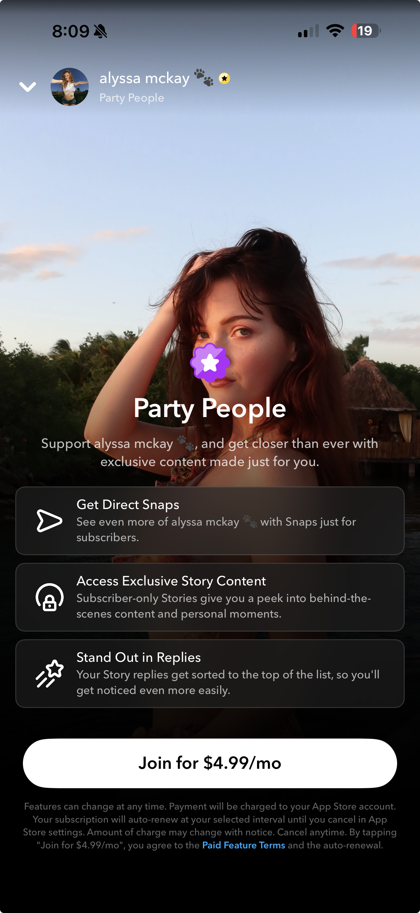
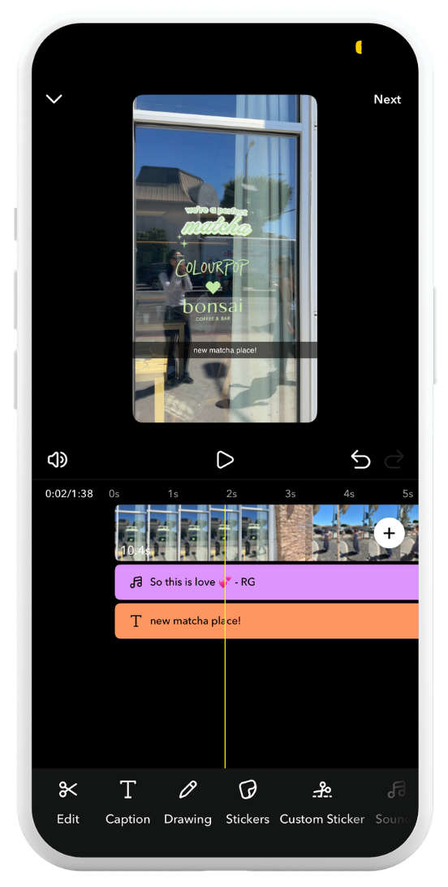
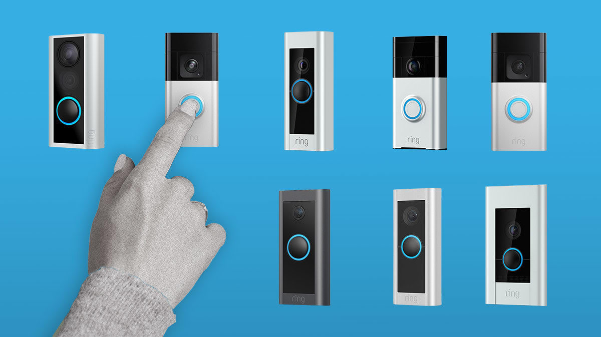

<title>Tiffany Kanamaru — User Researcher</title>
<meta charset="UTF-8" />
<meta name="viewport" content="width=device-width, initial-scale=1.0" />
<link rel="preconnect" href="https://fonts.googleapis.com" />
<link rel="preconnect" href="https://fonts.gstatic.com" crossorigin />
<link href="https://fonts.googleapis.com/css2?family=Newsreader:wght@300;400;500&family=Inter:wght@300;400;500;600;700&family=Caveat:wght@500;600;700&display=swap" rel="stylesheet" />
<link rel="stylesheet" href="styles.css" />
<script src="password-gate.js"></script>

<aside class="sidebar" id="sidebar">
  <a class="logo" href="index.html">Tiffany Kanamaru</a>
  <div class="sidebar-icons">
    <button type="button" class="icon-btn" data-copy-email="tiffanykanamaru@gmail.com" aria-label="Copy email">
      
      <span class="icon-tooltip">Copy email</span>
    </button>
    <a class="icon-btn" href="https://www.linkedin.com/in/tiffany-kanamaru/" target="_blank" rel="noopener" aria-label="LinkedIn">
      
    </a>
  </div>
  <button class="nav-toggle" id="nav-toggle" aria-label="Toggle menu">
    <svg viewBox="0 0 24 24" fill="none" stroke="currentColor" stroke-width="2" stroke-linecap="round"><path d="M3 6h18M3 12h18M3 18h18"/></svg>
  </button>
  <ul class="sidebar-nav">
    <li><a href="#work" class="active">Work</a></li>
    <li><a href="about.html">About</a></li>
    <li><a href="ai.html">AI</a></li>
    <li><a href="resume/Tiffany%20Kanamaru%20Resume.pdf" target="_blank" rel="noopener">Resume</a></li>
  </ul>
</aside>
<script>
  document.getElementById('nav-toggle').addEventListener('click', function () {
    document.getElementById('sidebar').classList.toggle('open');
  });
  document.querySelectorAll('[data-copy-email]').forEach(function (btn) {
    var tip = btn.querySelector('.icon-tooltip');
    var defaultText = tip.textContent;
    btn.addEventListener('click', function () {
      navigator.clipboard.writeText(btn.getAttribute('data-copy-email'));
      tip.textContent = 'Copied!';
      setTimeout(function () { tip.textContent = defaultText; }, 1500);
    });
  });
</script>

<main class="main">

<section class="hero">
  <div class="wrap">
    <span class="eyebrow-script"><span class="wave-emoji" aria-hidden="true">👋</span> I'm Tiffany.</span>
    <h1>I enjoy turning user insights into products that feel intuitive, delightful, and human.</h1>
  </div>
</section>

<section class="section" id="work">
  <div class="wrap">
    <div class="work-feature">
      <div class="work-feature-image">
        
      </div>
      <div class="work-feature-content">
        <div class="work-feature-brand">
          
          <span>Snapchat</span>
        </div>
        <h3>Creator Subscriptions</h3>
        <p>Creator Subscriptions is a feature that allows Snapchat users to subscribe to their favorite creators for access to exclusive content and perks.</p>
        <p>As the lead researcher, I conducted foundational research to understand creator and subscriber needs, then partnered closely with product and design throughout development. I ran iterative usability studies to validate concepts, uncover usability issues, and identify the highest-impact opportunities to improve the experience for both creators and subscribers before and after launch.</p>
      </div>
    </div>

    <div class="work-feature work-feature--reverse">
      <div class="work-feature-image">
        
      </div>
      <div class="work-feature-content">
        <div class="work-feature-brand">
          
          <span>Snapchat</span>
        </div>
        <h3>Timeline Editor</h3>
        <p>Timeline Editor is Snapchat&rsquo;s native video editing tool, designed to make it easier for creators to edit and publish short-form videos directly within the app.</p>
        <p>I led the research from concept through launch, conducting foundational research to identify the editing capabilities that would deliver the most value in the MVP and iterative usability studies to refine the experience. My research helped shape feature prioritization and ensured creators could successfully complete key editing tasks before launch.</p>
      </div>
    </div>

    <div class="work-feature">
      <div class="work-feature-image">
        
      </div>
      <div class="work-feature-content">
        <div class="work-feature-brand">
          
          <span>Snapchat</span>
        </div>
        <h3>Spotlight</h3>
        <p>At Snapchat, I worked on growing the number of creators posting to Spotlight, Snapchat&rsquo;s short-form video platform.</p>
        <p>I partnered closely with Product and Design to understand the end-to-end content creation journey from discovering inspiration and saving ideas to creating, editing, and publishing content. Through foundational research, usability studies, competitive analysis, and journey mapping, I identified the biggest opportunities across the creator experience, helping the team prioritize product investments and shape the future of content creation on Snapchat.</p>
      </div>
    </div>

    <div class="work-feature work-feature--reverse">
      <div class="work-feature-image">
        
      </div>
      <div class="work-feature-content">
        <div class="work-feature-brand">
          
          <span>Ring Home Devices</span>
        </div>
        <h3>Ring Website</h3>
        <p>Ring offers seven different video doorbells, and we heard from customers that it was often difficult to determine which product best fit their needs. I conducted usability research to understand where customers struggled throughout the shopping experience and identify opportunities to make product comparisons more intuitive.</p>
        <p>My findings informed improvements to the Ring website that simplified the shopping experience, reduced decision friction, and helped customers make more confident purchasing decisions.</p>
      </div>
    </div>

  </div>
</section>

<footer>
  <div class="wrap footer-wrap">
    <span class="footer-copyright">
      <span style="font-family: var(--font-script); font-size: 1.3rem; color: var(--ink-soft);">Made with Claude </span>
      &copy; 2026 Tiffany Kanamaru
    </span>
    <span style="display:flex; flex-direction:column; align-items:flex-end; gap:2px;">
      <span style="font-family: var(--font-script); font-size: 1.3rem; color: var(--ink-soft);">Let's chat!</span>
      <a href="mailto:tiffanykanamaru@gmail.com">tiffanykanamaru@gmail.com</a>
    </span>
  </div>
</footer>

</main>
